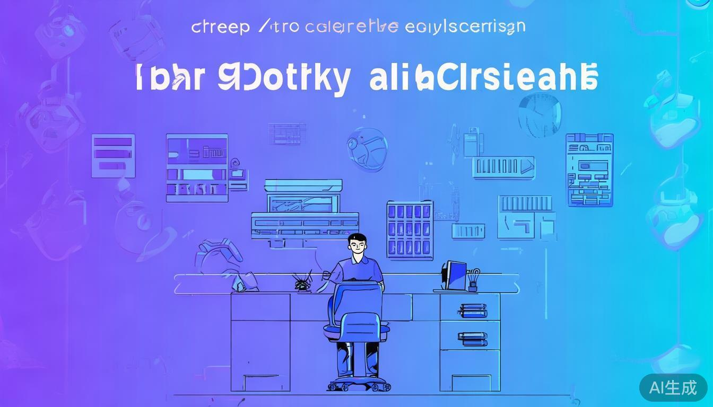

每天加班3小时到准点走：我用3个AI工具把周工作量压到16小时，老板还以为我招了助理
你是不是也有这种感觉：每天坐满8小时，回消息、做表格、写方案、改PPT连喝水都赶时间，下班一看待办还剩一半，加班到九点是常态，季度评优却轮不到你——不是你不努力，是你把80%的精力耗在了重复劳动上。
别神话AI：它不是替你上班，是替你干「无价值脏活」
很多人对AI的误解是「能直接替我写完美方案、做全案」，结果用的时候发现输出全是套话，改起来比自己写还费时间，转头就说AI没用。这其实是用错了定位：AI的核心价值从来不是「替代你的核心能力」，而是替你干掉所有占时间但不产生核心竞争力的重复劳动。
职场人每天的工作里，真正需要你动脑子判断、做决策、输出创意的部分，其实只占20%左右，剩下80%是什么？是把会议录音转成文字再提炼重点、是把零散的销售数据整理成表格再算同比环比、是给不同客户改10版措辞差不多的邮件、是把Word里的内容拆成PPT的逐字稿。这些活不需要你有多少年工作经验，不需要你懂行业逻辑，纯粹是耗时间的「脏活」。
字节跳动2024年内部效率报告显示，员工使用企业内置AI工具处理文档整理、数据初筛、会议纪要类工作后，平均周工作时长减少7.2小时，核心产出（方案、决策、客户沟通）的完成质量反而提升了14%——说白了，你把耗在脏活上的精力省下来，放在真正能出成绩的事上，不加班反而能出更多活。
3个零门槛工具，覆盖90%职场日常场景

我自己用了大半年，筛选下来不需要写复杂提示词、打开就能用、效果稳定的工具就3个，全是官方正规产品，没有野路子工具，数据安全有保障：
| 工具名称 | 核心适用场景 | 免费版额度 | 注意事项 |
|---|---|---|---|
| 飞书妙计/通义听悟 | 会议录音转写、访谈记录整理、音视频提取文字 | 飞书妙计每月10小时转写，通义听悟每月5小时（以官方最新规则为准） | 上传内部涉密会议录音前，务必确认公司信息安全规定 |
| 豆包4.0/文心一言4.0（网页端） | 文档润色、邮件撰写、方案框架搭建、信息整理 | 豆包4.0每天20次免费对话，文心一言4.0每天10次免费对话（以官方最新规则为准） | 涉及公司内部数据的内容，建议脱敏后再输入 |
| ChatExcel/ WPS AI（表格功能） | 表格数据处理、函数生成、数据透视、可视化建议 | ChatExcel完全免费，WPS AI需会员（约15元/月） | 处理超过10万行的大数据集时，建议先拿小样本测试公式准确性 |
别贪多装十几个AI工具，最后每个都用不顺手。这三个覆盖了听、写、算三个最高频的工作场景，把这三个用熟，就能干掉大部分重复劳动。我自己现在每周处理3场2小时的会议、20份左右的客户邮件、5-6份数据表格，之前这些活要占我20个小时以上，现在3个小时就能全部搞定。
90%的人用AI没效果，是因为提示词写反了
很多人用AI写东西，上来就说「帮我写一份季度工作总结」，出来的内容全是「圆满完成任务、攻坚克难、砥砺前行」的套话，根本没法用，这不是AI不行，是你给的指令太模糊了。
写提示词根本不需要学什么复杂的「提示词工程师」课程，记住一个万能公式就行：角色+背景+要求+输出格式，别让AI猜你要什么。举个最简单的例子，你要给客户写一封项目延期的道歉邮件，别只说「帮我写道歉信」，你就这么写：
你是拥有5年ToB项目服务经验的客户经理，现在要给合作了2年的制造业客户张总写一封项目延期的说明邮件：
背景：原定于10月30日上线的库存管理系统，因为客户方上周临时提出要新增3个报表模块，评估后需要延期10天到11月9日上线，我们这边会安排专属技术对接人全程驻场支持，不会额外收取新增模块的开发费用。
要求：态度诚恳，不要找借口，先讲解决方案再讲延期原因，不要用官话套话，篇幅300字以内。
输出格式：标准商务邮件格式，开头有称呼，结尾有落款和联系方式。用这个提示词写出来的内容，你只需要改个名字和具体日期就能直接发，根本不需要改半小时。还有个小技巧：如果AI第一次输出的内容不符合你的预期，别重新写提示词，直接告诉它「第三部分太生硬，改得更口语化一点」「把数据部分换成对比表格」，多轮调整2次，出来的内容基本就能直接用。
别踩这3个坑，不然越用AI效率越低
我刚开始用AI的时候踩过不少坑，最严重的一次差点给客户发错数据，后来总结了三个绝对不能碰的红线：
第一，绝对不要让AI替你做最终决策，尤其是涉及数据、合同、核心方案判断的部分。AI本质是概率模型，会出现「幻觉」，也就是一本正经说瞎话，比如你让它算数据，它可能给你编个不存在的函数，你让它查行业政策，它可能给你编个已经废止的文件。所有AI输出的内容，涉及数字、引用、规则的部分，你必须挨个核对，我现在的习惯是AI处理完的表格，我会随机抽3-5行数据自己算一遍，确认公式没错再用，从那之后再也没出过错。
第二，别什么活都丢给AI。比如给直属领导写的工作汇报、给核心客户做的定制化方案，这些内容需要你自己的思考和判断，AI只能帮你搭框架、找素材，核心的观点和逻辑必须你自己填。如果你全让AI写，领导一眼就能看出来内容没有思考，反而会觉得你工作敷衍。
第三，别在AI工具里上传涉密信息。现在大部分公共AI工具的用户协议里，都会标注用户输入的内容可能会被用于模型训练（具体以各平台官方隐私协议为准），如果是公司的未公开财报、核心客户信息、涉密的项目内容，绝对不要输入到公共AI工具里，不然可能引发信息安全问题，真的会丢工作。
行动清单
- 今天下班前花10分钟，把上面提到的3个工具注册好，随便找一份之前写过的工作邮件，用万能提示词公式让AI润色一遍，对比下和你自己写的差异。
- 明天上班开的第一场会，别自己手写记录，用飞书妙计或者通义听悟录屏（提前征得参会人同意），散会10分钟后直接导出带重点标记的会议纪要，不用再花1小时整理录音。
- 本周内找一份你之前要花2小时以上处理的表格，把你要实现的效果告诉ChatExcel或者WPS AI，让它给你写函数，自己核对3行数据确认正确后再批量处理。
- 把那个万能提示词公式存到你电脑桌面的便签里，下次找AI写东西的时候直接套，别再写「帮我写个XX」这种无效指令。
- 今天开始做个小记录：每天下班前记一下你今天干的活里，哪些是不需要动脑子的重复劳动，下次遇到同类活直接交给AI处理，一周后你就能算出自己省了多少时间。
其实AI从来不是什么能让你一夜之间升职加薪的神器，它就是个像当年的Excel、PPT一样的效率工具——最早会用Excel的人，不用再拿着计算器算一天账；最早会用PPT的人，不用再手写一黑板的汇报内容；现在最早会用AI处理重复劳动的人，就能把时间花在真正能让你涨本事、出成绩的事上，准点下班还能被老板看见，这才是用AI的真正意义。
出处声明：本页内容为白驹全局大脑原创或标注出处，真实可核验，不侵犯原作者权益。发布时间 2026-08-28。
出处声明：本页内容为白驹全局大脑原创，或已标注引用来源；改编内容遵循原始项目许可证（如 MIT / CC），不侵犯原作者权益。若引用内容涉及版权问题，请联系我们更正。
出处声明：本页内容为白驹全局大脑原创，或已标注引用来源；改编内容遵循原始项目许可证（如 MIT / CC），不侵犯原作者权益。若引用内容涉及版权问题，请联系我们更正。